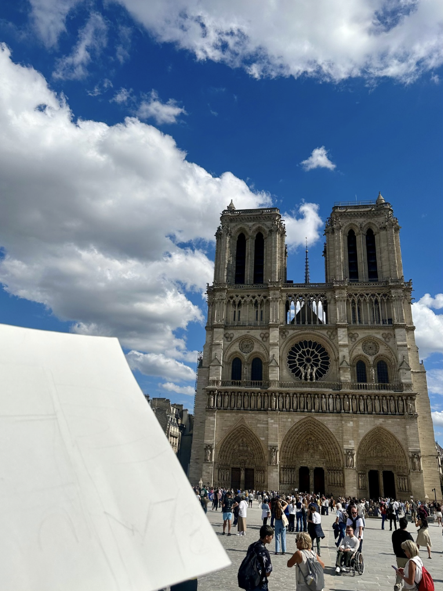

Artist Statement
I drew this sketch of Notre-Dame while sitting directly in front of the cathedral in Paris. It took about eight hours to finish, and the hardest (and best) part was that nothing stayed the same. As the day moved on, the light shifted, shadows slid across the façade, and the building kept changing in front of me. Sketching feels very different from taking a photo. It forces me to slow down and really look: the small textures in the stone, the edges of the arches, the tiny details I would normally miss. This drawing helps me remember not just the place, but the time I spent there.

